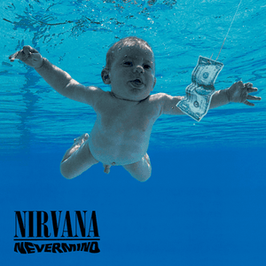
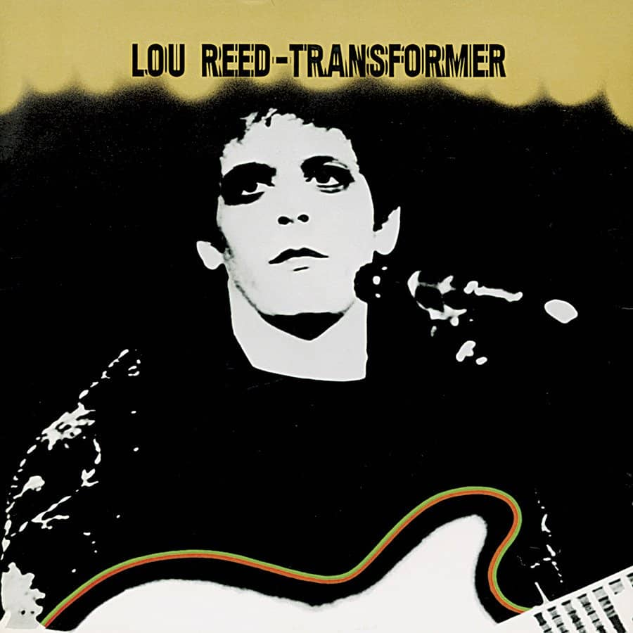

Textures
Sort by Album
Sort by Artist
Sort by Release Date
Sort by Rating
Melodic Mosaic


Sonic Footprint
Figures Unveiled: Spotlight on Stats
Collection's Top Creatives:
Prolific Album Masters
Point Leaders:
Artistry in Full Score
Genre Highlights:
Leading Tags